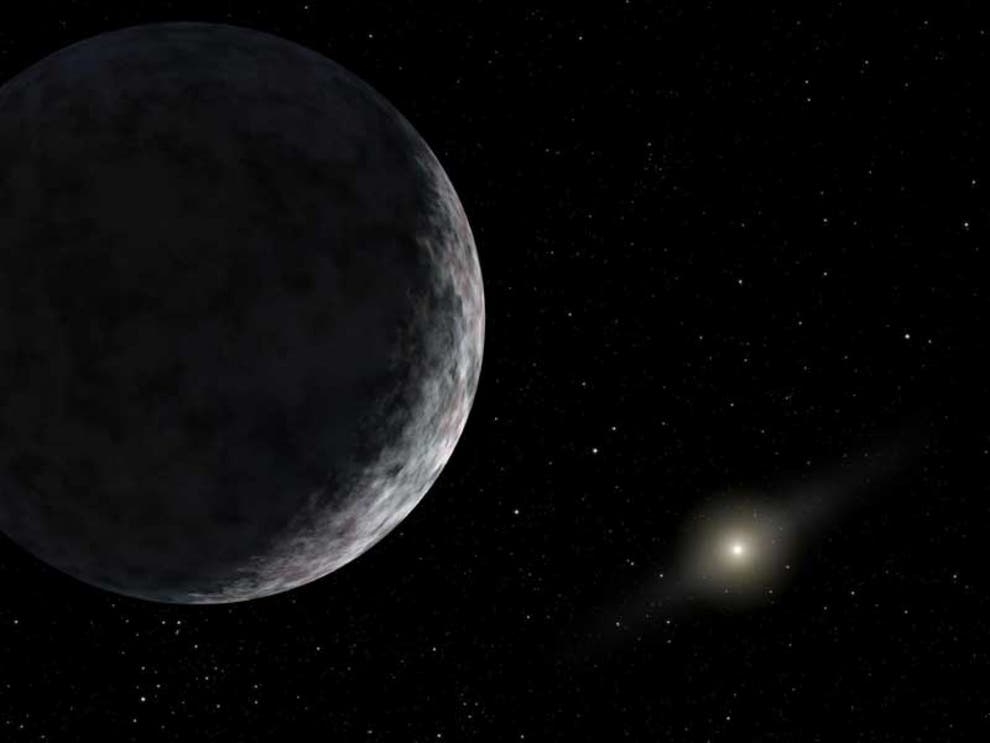
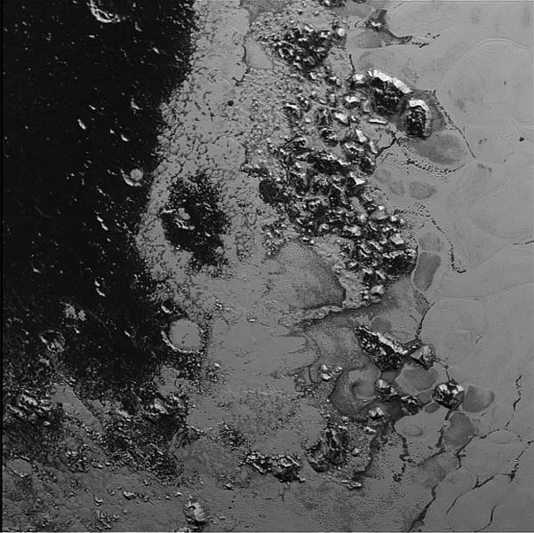
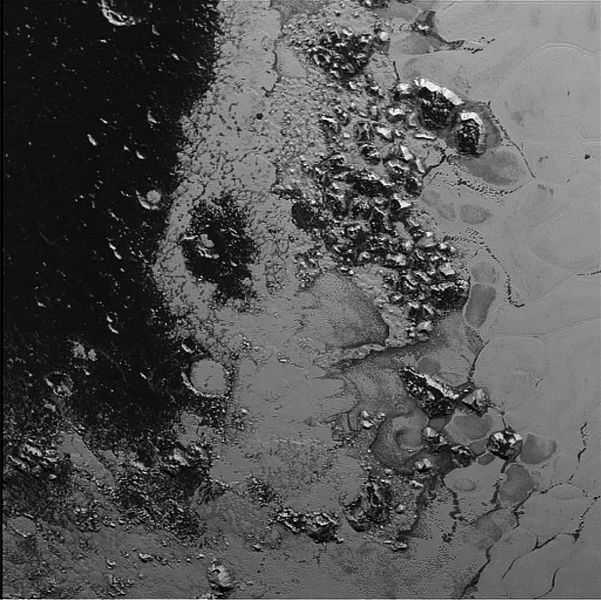
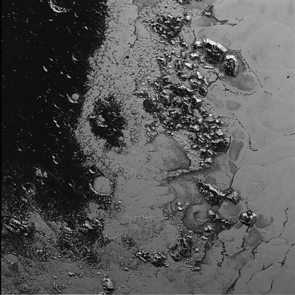

Facts About Pluto
Overview
- Pluto is no longer officially a planet but now defined as a dwarf planet
- Its orbit takes 248 Earth years and does not conform to the 8 planets as it over takes Neptune to be closer to the Sun for a period of 20 years
- Pluto has 5 moons orbiting around it
- Pluto is located in an outer part of our Solar System known as the Kuiper Belt
Size and Distances
- Pluto on average orbits at 3.6 billion miles or 5.8 billion kilometres from the Sun
- It is smaller than our Moon with a Diameter of 1400 miles or 2380 kilometres
- At their closest, Pluto is 2.66 billion miles or 4.28 billion kilometres from Earth
- You could easily fit Pluto inside the U.S.A

 


Composition
- Pluto is thought to have a rocky inner core surrounded by thick ice
- The surface is made up of mountains, valleys and plains
- The dwarf planet is very similar in composition to that of the Gas Giant Moons
- There are signs of glacial flows on the surface of Pluto due to lack of numerous craters
Temperature and Atmosphere
- The average temperature on Pluto -228 to -238 degrees celsius
- Pluto has a thin atmosphere of nitrogen, methane and carbon monoxide.
- The atmosphere keeps Pluto well insolated causing seasonal changes
- The suface pressure of Pluto is extremely low - roughly 1/100000 that of Earth